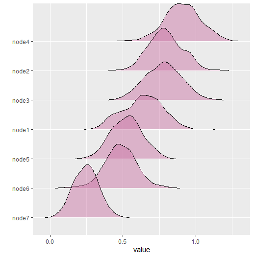
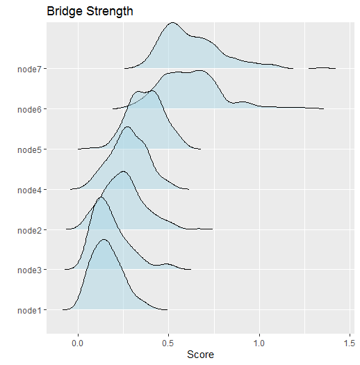

Custom Network Statistics
Donny Williams
5/19/2020
Source:vignettes/netstat_custom.Rmd
netstat_custom.RmdBackground
This vignette describes a new feature to BGGM
(2.0.0) that allows for computing custom network statistics
(e.g., centrality). The new function is called
roll_your_own and it was suggested by a user of
BGGM (see feature
request here).
Basic Idea
The basic idea is to compute the chosen network statistic for each of the sampled partial correlation matrices, resulting in a distribution. All that is required is to define a function that takes either a partial correlation matrix or a weighted adjacency matrix (the partial correlation matrix with values set to zero) as the first argument. Several examples are provided below.
R packages
# need the developmental version
if (!requireNamespace("remotes")) {
install.packages("remotes")
}
# install from github
remotes::install_github("donaldRwilliams/BGGM")Data
In all examples, a subset of ptsd data is used. The
subset includes two of the “communities” of symptoms (details for these data can be found in Armour et al.
2017). The data are ordinal (5-level Likert).
Fit Model
For these data, the GGM is estimated with a semi-parametric copula
(Hoff 2007). In BGGM,
this implemented with type = mixed which is kind of a
misnomer because the data do not have to be “mixed” (consisting of
continuous and discrete variables). Note that the model is fitted only
once which highlights that only the posterior samples are needed to
compute any network statistic.
Examples
Expected Influence
The first example computes expected influence (Robinaugh, Millner, and McNally 2016). The first step is to define a function
# define function
f <- function(x,...){
networktools::expectedInf(x,...)$step1
}Note that x takes the matrix which is then passed to
expectedInf. The ... allows for passing
additional arguments to the expectedInf function. An
example is provided below. With the function defined, the next step is
to compute the network statistic.
# iter = 250 for demonstrative purposes
# (but note even 1000 iters takes less than 1 second)
# compute
net_stat <- roll_your_own(object = fit,
FUN = f,
select = FALSE,
iter = 250)
# print
net_stat
#> BGGM: Bayesian Gaussian Graphical Models
#> ---
#> Network Stats: Roll Your Own
#> Posterior Samples: 250
#> ---
#> Estimates:
#>
#> Node Post.mean Post.sd Cred.lb Cred.ub
#> 1 0.701 0.099 0.508 0.871
#> 2 0.912 0.113 0.722 1.179
#> 3 0.985 0.112 0.742 1.199
#> 4 1.056 0.105 0.851 1.247
#> 5 1.056 0.116 0.862 1.288
#> 6 0.491 0.092 0.329 0.679
#> 7 0.698 0.098 0.521 0.878
#> --- The option select = FALSE indicates to compute the
statistics from the partial correlation matrices (nothing set to zero).
This can be changed with select = TRUE. Internally, each of
the sampled partial correlation matrices is multiplied by the adjacency
matrix.
net_stat <- roll_your_own(object = fit,
FUN = f,
select = TRUE,
iter = 250)
# print
net_stat
#> BGGM: Bayesian Gaussian Graphical Models
#> ---
#> Network Stats: Roll Your Own
#> Posterior Samples: 250
#> ---
#> Estimates:
#>
#> Node Post.mean Post.sd Cred.lb Cred.ub
#> 1 0.636 0.136 0.386 0.874
#> 2 0.792 0.113 0.580 0.996
#> 3 0.777 0.122 0.544 1.001
#> 4 0.910 0.121 0.667 1.143
#> 5 0.525 0.104 0.331 0.727
#> 6 0.484 0.110 0.270 0.686
#> 7 0.247 0.081 0.088 0.412
#> --- The results are then plotted with
plot(net_stat)
Bridge Strength
The next example computes bridge strength (Jones, Ma, and McNally 2019). This requires the user to define clusters or “communities”.
# clusters
communities <- substring(colnames(Y), 1, 1)
# function is slow
f <- function(x, ...){
networktools::bridge(x, ...)$`Bridge Strength`
}
# compute
net_stat <- roll_your_own(object = fit,
FUN = f,
communities = communities,
iter = 250)
# print
net_stat
#> BGGM: Bayesian Gaussian Graphical Models
#> ---
#> Network Stats: Roll Your Own
#> Posterior Samples: 250
#> ---
#> Estimates:
#>
#> Node Post.mean Post.sd Cred.lb Cred.ub
#> 1 0.162 0.082 0.035 0.347
#> 2 0.250 0.113 0.061 0.501
#> 3 0.180 0.104 0.049 0.480
#> 4 0.280 0.098 0.090 0.480
#> 5 0.375 0.093 0.196 0.558
#> 6 0.617 0.166 0.339 1.002
#> 7 0.628 0.166 0.400 1.025
#> --- Notice communities. This is passed to ...
in the function f, which, in turn, is passed to the
function bridge. Any number of arguments can be passed this
way. Here are the results
This can then be plotted and further customized (the returned object
is a ggplot)

Assortment
The next example computes assortment (Newman 2003).
# clusters
communities <- substring(colnames(Y), 1, 1)
# define function
f <- function(x,...){
assortnet::assortment.discrete(x, ...)$r
}
net_stat <- roll_your_own(object = fit,
FUN = f,
types = communities,
weighted = TRUE,
SE = FALSE, M = 1,
iter = 250)
# print
net_stat
#> BGGM: Bayesian Gaussian Graphical Models
#> ---
#> Network Stats: Roll Your Own
#> Posterior Samples: 250
#> ---
#> Estimates:
#>
#> Post.mean Post.sd Cred.lb Cred.ub
#> 0.261 0.124 -0.01 0.469
#> --- This example demonstrate that ... can take several
arguments. The results are stored in the net_stat object.
They can be accessed with
hist(net_stat$results, main = "Assortment")
Note
The function roll_your_own is expecting the custom
function to return either a single number or a number for each node.
This ensures all the printing and plotting functions work. However, you
could return anything you want and then access the results to plot,
summarize, etc.